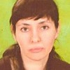

Дошкольное отделение школы № 1386
В 2015 году 38% первоклассников Школы № 1386 пришли из дошкольного отделения.
- Васильцовский переулок, 1
Воспитатели
Воспитатели, которых чаще всего благодарят родители (отзывы и профили сотрудников взяты с официального сайта школы):|
Воспитатель
Иовенко Мария Михайловна
4 благодарности |
 Физ. рук.
Крашенинникова Анна Витальевна
Физ. рук.
Крашенинникова Анна Витальевна
3 благодарности |
Воспитатель
Иванова Наталья Сергеевна
2 благодарности |
Воспитатель
Кузина Дарья Александровна
2 благодарности |
|
Методист
Пиняскина Мария Андреевна
2 благодарности |
Муз. рук.
Сергиенко Татьяна Николаевна
2 благодарности |
Завхоз
Борисова Наталья Игоревна
1 благодарность |
Воспитатель
Наумова Наталья Вячеславовна
1 благодарность |
|

Логопед
Слеза Ольга Петровна
1 благодарность |
Отзывы
Данные собраны c официального сайта школы и через форму для отзывов.
Добрый день!
Хотелось бы выразить огромную благодарность педагогическому составу и всем участвующим в воспитательном процессе наших детей школы и детского сада №1386. Наша старшая дочь учится в 7 «Б» классе, а сын посещает группу детского сада при школе, поэтому хотелось бы сказать несколько слов и про педагогов, и про воспитателей.
Огромное спасибо нашему классному руководителю начальной школы – Кочетовой Ирине Александровне за ее терпение и труд вложенный в наших детей на самом первом, но не менее важном этапе становления мировоззрения наших деток. На протяжении четырех лет Вы передавали свои навыки и знания, а также любовь и доброту к окружающему, помогали нам – родителям воспитывать и формировать личности в каждом ребенке. Дети и сегодня отзываются о Вас с теплотой!
Самый сложный период в воспитании приходится на подростковый возраст, когда наши детки хотят быть независимыми и порой становятся неуправляемыми. И только неоценимый опыт, мудрость и терпение учителей и родителей могут направить эмоции и знания наших детей в нужное русло. Спасибо нашему классному руководителю – Борисой Елене Владимировне за терпение, умелое руководство и искреннюю дружбу с нашими детьми. Дети с удовольствием посещают Ваши уроки, прислушиваются к Вашему мнению, с радостью посещают культурные мероприятия, участвуют в школьных постановках.
Также хотелось бы отметить работу воспитателей в детском саду с нашими малышами! Каждое утро нас встречают с улыбкой! Мы с удовольствием посещаем праздники, которые организуют для нас воспитатели и дети! Спасибо Светлане Витальевне и Дарье Александровне, воспитателям группы «Умки», наши выступления всегда очень музыкальные и веселые!
Конечно, хотелось бы отметить умелое и правильно организованное управление работой педагогического состава и всего коллектива школы и детского сада. Огромная благодарность директору Брылевой Ирине Юрьевне.
Большая признательность старшему воспитателю и методисту детского сада Пиняскиной Марии Андреевне за внимание к любому вопросу, с которым к ней можно обратится, и он точно не останется без внимания!
Отдельное спасибо за вклад в организацию участия родителей в школьном процессе председателю родительского комитета Лебешовой Ольге Александровне. Вы воспитываете не только наших детей, но порой и нас – родителей!
Дорогие женщины! От всей души поздравляем Вас с женским днем, с 8 марта!
Хочется пожелать Вам здоровья, терпения, душевных сил, чтобы Ваша неоценимая работа с нашими детьми приносила Вам удовольствие, чтобы радость и благодарные улыбки детей и родителей перекрывали сложные моменты. Весеннего настроения, улыбок и цветов!
Спасибо Вам большое!
Хотелось бы выразить огромную благодарность педагогическому составу и всем участвующим в воспитательном процессе наших детей школы и детского сада №1386. Наша старшая дочь учится в 7 «Б» классе, а сын посещает группу детского сада при школе, поэтому хотелось бы сказать несколько слов и про педагогов, и про воспитателей.
Огромное спасибо нашему классному руководителю начальной школы – Кочетовой Ирине Александровне за ее терпение и труд вложенный в наших детей на самом первом, но не менее важном этапе становления мировоззрения наших деток. На протяжении четырех лет Вы передавали свои навыки и знания, а также любовь и доброту к окружающему, помогали нам – родителям воспитывать и формировать личности в каждом ребенке. Дети и сегодня отзываются о Вас с теплотой!
Самый сложный период в воспитании приходится на подростковый возраст, когда наши детки хотят быть независимыми и порой становятся неуправляемыми. И только неоценимый опыт, мудрость и терпение учителей и родителей могут направить эмоции и знания наших детей в нужное русло. Спасибо нашему классному руководителю – Борисой Елене Владимировне за терпение, умелое руководство и искреннюю дружбу с нашими детьми. Дети с удовольствием посещают Ваши уроки, прислушиваются к Вашему мнению, с радостью посещают культурные мероприятия, участвуют в школьных постановках.
Также хотелось бы отметить работу воспитателей в детском саду с нашими малышами! Каждое утро нас встречают с улыбкой! Мы с удовольствием посещаем праздники, которые организуют для нас воспитатели и дети! Спасибо Светлане Витальевне и Дарье Александровне, воспитателям группы «Умки», наши выступления всегда очень музыкальные и веселые!
Конечно, хотелось бы отметить умелое и правильно организованное управление работой педагогического состава и всего коллектива школы и детского сада. Огромная благодарность директору Брылевой Ирине Юрьевне.
Большая признательность старшему воспитателю и методисту детского сада Пиняскиной Марии Андреевне за внимание к любому вопросу, с которым к ней можно обратится, и он точно не останется без внимания!
Отдельное спасибо за вклад в организацию участия родителей в школьном процессе председателю родительского комитета Лебешовой Ольге Александровне. Вы воспитываете не только наших детей, но порой и нас – родителей!
Дорогие женщины! От всей души поздравляем Вас с женским днем, с 8 марта!
Хочется пожелать Вам здоровья, терпения, душевных сил, чтобы Ваша неоценимая работа с нашими детьми приносила Вам удовольствие, чтобы радость и благодарные улыбки детей и родителей перекрывали сложные моменты. Весеннего настроения, улыбок и цветов!
Спасибо Вам большое!
Посетили 13 февраля 2016 года фестиваль "Наши общие возможности, наши общие результаты". Получили огромное удовольствие и массу положительных впечатлений. Замечательные веселые игры, песни и пляски на свежем воздухе, горячий чай из самовара, плюшки, охотно угостились. Посетили три мастер-класса, сделали своими руками целых два подарка папе к 23 февраля:) Очень понравилось творчество с ребенком, так как в домашних условиях не всегда это получается. Восхищает энтузиазм и самоотверженность воспитателей нашего детского сада, их искреннее и ответственное отношение к своей работе. Отдельное спасибо хочется сказать воспитателю группы "Солнышки" Ивановой Наталье Сергеевне за её трудолюбие, усердие и любовь к нашим детишкам.
БЛАГОДАРНОСТЬ
руководству детского сада 1386, педагогам и сотрудникам
в честь пятилетия учреждения от родителей группы ПЧЕЛКИ!!!
Нашему дорогому и любимому Садику пять лет!!!
В честь юбилейной даты хотим поблагодарить всех сотрудников за благородный, самоотверженный труд с нашими детьми!
Без преувеличения можно сказать, что в Саду работают настоящие энтузиасты, профессионалы с большой буквы! Здесь царит атмосфера радости и добра, оптимизма и творчества, любви и понимания!
Основной воспитатель в нашей группе, Денисова Людмила Павловна, приняла наших деток в самом маленьком возрасте (с двух лет), научила их самым первым и основным навыкам жизнедеятельности! А сейчас они уже учатся писать и считать, участвуют в разнообразных тематических занятиях в рамках национальных русских традиций (Масленница, Пасха, День Урожая и т.п.), так и общественно-политической направленности (День Победы, День знаний и др.). Силами Людмилы Павловны и родителей создаются видеофильмы и фоторепортажи о проводимых мероприятиях! В группе всегда интересно и креативно, тепло и радостно, красиво, уютно и очень душевно!
Хочется сказать большое спасибо Надежде Михайловне - воспитателю, которая недавно пришла работать в нашу группу, и воспитателям, которые при необходимости заменяют основных педагогов: Дарье Александровне, Марие Михайловне, Наталье Вячеславовне.
Прекрасные музыкальные занятия проходят под руководством Татьяны Николаевны Сергиенко. С какой радостью дети поют, водят хороводы, разыгрывают музыкальные сценки. Искрометные, яркие праздники и утренники в группе прекрасно организованы и музыкально иллюстрированы, дети разнообразно задействованы в музыкальных фрагментах.
Регулярные занятия в плавательном бассейне с тренером Анной Витальевной Крашенинниковой - спортсменкой, участницей Олимпийских игр – выше всяких похвал! Все дети умеют плавать к выпуску из Садика! И все это без дополнительной оплаты!
Развиваются дети под пристальным вниманием педагогов-специалистов. Высокопрофессиональный логопед и просто человек с добрым сердцем и огромной любовью к детям, Ольга Петровна Слеза регулярно беседует с детьми и выявляет задержки и особенности речевого развития на самом раннем этапе, дает рекомендации родителям. Замечательно проходят занятия физкультуры (педагог Анна Владимировна Васина).
Организованы в Саду и дополнительные занятия: вокальная студия (педагог Людмила Владимировна Каменская), танцевальная студия (Римма Ивановна Семенова), школа единоборств (Алексей Александрович Кудрявцев), занятия английского языка (Алина Александровна Бубина), компьютерная грамотность ( педагог Александра Михайловна Болдырева).
Здоровье наших детей заботливо и внимательно охраняется дорогой Ольгой Ервандовной Кононенко. Всегда внимательная, сосредоточенная, отзывчивая и, главное, очень грамотная! Спасибо Вам, Ольга Ервандовна!
Отдельное спасибо хочется сказать помощникам воспитателей! В нашей группе долгое время работала Кристина Федоровна, а сейчас ей на смену пришла Жанна Александровна! Спасибо, Вашим золотым рукам и добрым сердцам!
Нельзя не поблагодарить работников службы охраны: двух Сергеев Владимировичей! Они знают каждого ребенка по имени!!! Очень доброжелательно встречают и провожают детей у входа в Сад! Всегда бдительны и внимательны! Мы спокойны за своих детей с такой охраной!
Огромное спасибо нашим великолепным поварам – Наталье Викторовне и Наталье Петровне; завхозу Наталье Игоревне; работнику прачечной Елене Владимировне; уборщице Наталье Васильевне!!!
Безусловно, за такую замечательную работу детского учреждения, за высокий уровень Педагогического профессионализма благодарим Руководство садика! Мы благодарны старшему воспитателю Марии Андреевне Пиняскиной, заместителю директора в группах дошкольного возраста Марине Петровне Щеверовой и директору ГБОУ СОШ 1386 Брылевой Ирине Юрьевне!!! Только настоящие Профессионалы и умные Руководители могут собрать такой замечательный коллектив единомышленников, сохранять атмосферу добра, творчества, взаимовыручки, великодушия в стенах образовательного учреждения!!!
Спасибо Вам, сотрудники детского сада 1386 – люди с добрым сердцем и светлой душой! Пусть Ваша огромная и настоящая любовь к детям дает силы в благородном деле – воспитании будущего поколения граждан России!
Вдохновения Вам, радости и света, здоровья, благополучия и любви, счастья Вашим семьям!
С огромным уважением и благодарностью, родители группы ПЧЕЛКИ:
1. Клюева Анастасия Евгеньевна
2. Безина Татьяна Алексеевна
3. Суворова Елена Петровна
4. Никифорова Наталья Георгиевна
5. Мамедолиев Герай Камадович
6. Попов Сергей Анатольевич
7. Петров Олег Борисович
8. Ильина Ольга Валерьевна
9. Прокофьева Алена Васильевна
10. Сенютина Анастасия Александровна
11. Попова Лидия Викторовна
12. Снимщикова Ирина Александровна
13. Башкова Инна Михайловна
14. Разинкова Вера Александровна
15. Еропкина Татьяна Анатольевна
16. Горохова Елена Владимировна
17. Безин Роман Алексеевич
18. Холин Вадим Анатольевич
19. Пронкин Сергей Владимирович
20. Музыка Анна Александровна
21. Чуракова Наталья Георгиевна
22. Соколова Любовь Петровна
23. Положенцев Андрей Александрович
24. Зайнуллина Наталья Александровна
25. Дмитриева Марина Валентиновна
26. Соколов Николай Петрович
27. Кожевникова Клавдия Кузьмовна
28. Ерохина Оксана Васильевна
29. Гильманова Палия Рафековна
30. Макурина Наталья Юрьевна
31. Меркулова Лия Викторовна
32. Михайлович Ирина Павловна
руководству детского сада 1386, педагогам и сотрудникам
в честь пятилетия учреждения от родителей группы ПЧЕЛКИ!!!
Нашему дорогому и любимому Садику пять лет!!!
В честь юбилейной даты хотим поблагодарить всех сотрудников за благородный, самоотверженный труд с нашими детьми!
Без преувеличения можно сказать, что в Саду работают настоящие энтузиасты, профессионалы с большой буквы! Здесь царит атмосфера радости и добра, оптимизма и творчества, любви и понимания!
Основной воспитатель в нашей группе, Денисова Людмила Павловна, приняла наших деток в самом маленьком возрасте (с двух лет), научила их самым первым и основным навыкам жизнедеятельности! А сейчас они уже учатся писать и считать, участвуют в разнообразных тематических занятиях в рамках национальных русских традиций (Масленница, Пасха, День Урожая и т.п.), так и общественно-политической направленности (День Победы, День знаний и др.). Силами Людмилы Павловны и родителей создаются видеофильмы и фоторепортажи о проводимых мероприятиях! В группе всегда интересно и креативно, тепло и радостно, красиво, уютно и очень душевно!
Хочется сказать большое спасибо Надежде Михайловне - воспитателю, которая недавно пришла работать в нашу группу, и воспитателям, которые при необходимости заменяют основных педагогов: Дарье Александровне, Марие Михайловне, Наталье Вячеславовне.
Прекрасные музыкальные занятия проходят под руководством Татьяны Николаевны Сергиенко. С какой радостью дети поют, водят хороводы, разыгрывают музыкальные сценки. Искрометные, яркие праздники и утренники в группе прекрасно организованы и музыкально иллюстрированы, дети разнообразно задействованы в музыкальных фрагментах.
Регулярные занятия в плавательном бассейне с тренером Анной Витальевной Крашенинниковой - спортсменкой, участницей Олимпийских игр – выше всяких похвал! Все дети умеют плавать к выпуску из Садика! И все это без дополнительной оплаты!
Развиваются дети под пристальным вниманием педагогов-специалистов. Высокопрофессиональный логопед и просто человек с добрым сердцем и огромной любовью к детям, Ольга Петровна Слеза регулярно беседует с детьми и выявляет задержки и особенности речевого развития на самом раннем этапе, дает рекомендации родителям. Замечательно проходят занятия физкультуры (педагог Анна Владимировна Васина).
Организованы в Саду и дополнительные занятия: вокальная студия (педагог Людмила Владимировна Каменская), танцевальная студия (Римма Ивановна Семенова), школа единоборств (Алексей Александрович Кудрявцев), занятия английского языка (Алина Александровна Бубина), компьютерная грамотность ( педагог Александра Михайловна Болдырева).
Здоровье наших детей заботливо и внимательно охраняется дорогой Ольгой Ервандовной Кононенко. Всегда внимательная, сосредоточенная, отзывчивая и, главное, очень грамотная! Спасибо Вам, Ольга Ервандовна!
Отдельное спасибо хочется сказать помощникам воспитателей! В нашей группе долгое время работала Кристина Федоровна, а сейчас ей на смену пришла Жанна Александровна! Спасибо, Вашим золотым рукам и добрым сердцам!
Нельзя не поблагодарить работников службы охраны: двух Сергеев Владимировичей! Они знают каждого ребенка по имени!!! Очень доброжелательно встречают и провожают детей у входа в Сад! Всегда бдительны и внимательны! Мы спокойны за своих детей с такой охраной!
Огромное спасибо нашим великолепным поварам – Наталье Викторовне и Наталье Петровне; завхозу Наталье Игоревне; работнику прачечной Елене Владимировне; уборщице Наталье Васильевне!!!
Безусловно, за такую замечательную работу детского учреждения, за высокий уровень Педагогического профессионализма благодарим Руководство садика! Мы благодарны старшему воспитателю Марии Андреевне Пиняскиной, заместителю директора в группах дошкольного возраста Марине Петровне Щеверовой и директору ГБОУ СОШ 1386 Брылевой Ирине Юрьевне!!! Только настоящие Профессионалы и умные Руководители могут собрать такой замечательный коллектив единомышленников, сохранять атмосферу добра, творчества, взаимовыручки, великодушия в стенах образовательного учреждения!!!
Спасибо Вам, сотрудники детского сада 1386 – люди с добрым сердцем и светлой душой! Пусть Ваша огромная и настоящая любовь к детям дает силы в благородном деле – воспитании будущего поколения граждан России!
Вдохновения Вам, радости и света, здоровья, благополучия и любви, счастья Вашим семьям!
С огромным уважением и благодарностью, родители группы ПЧЕЛКИ:
1. Клюева Анастасия Евгеньевна
2. Безина Татьяна Алексеевна
3. Суворова Елена Петровна
4. Никифорова Наталья Георгиевна
5. Мамедолиев Герай Камадович
6. Попов Сергей Анатольевич
7. Петров Олег Борисович
8. Ильина Ольга Валерьевна
9. Прокофьева Алена Васильевна
10. Сенютина Анастасия Александровна
11. Попова Лидия Викторовна
12. Снимщикова Ирина Александровна
13. Башкова Инна Михайловна
14. Разинкова Вера Александровна
15. Еропкина Татьяна Анатольевна
16. Горохова Елена Владимировна
17. Безин Роман Алексеевич
18. Холин Вадим Анатольевич
19. Пронкин Сергей Владимирович
20. Музыка Анна Александровна
21. Чуракова Наталья Георгиевна
22. Соколова Любовь Петровна
23. Положенцев Андрей Александрович
24. Зайнуллина Наталья Александровна
25. Дмитриева Марина Валентиновна
26. Соколов Николай Петрович
27. Кожевникова Клавдия Кузьмовна
28. Ерохина Оксана Васильевна
29. Гильманова Палия Рафековна
30. Макурина Наталья Юрьевна
31. Меркулова Лия Викторовна
32. Михайлович Ирина Павловна
Мой ребенок посещает группу "Звездочки", воспитателями в которой работают Иовенко Мария Михайловна, Трофимова Светлана Викторовна и помощница воспитателей Гасумова Любовь Владимировна. Очень хочется сказать ВАМ Большое Спасибо и поблагодарить за ВСЁ! За заботу, внимание и ласку к нашим детям и, конечно же, за профессионализм! Очень важно, что к каждому малышу педагоги находят свой, индивидуальный подход, знают особенности каждого ребенка. Малыш в детском саду чувствует себя "как дома"! А нам, мамам и папам - это так важно!
Спасибо огромное за занятия, проводимые педагогами! Работы и поделки ребят - всегда разнообразные и очень милые! Детки с радостью и гордостью хвалятся своими первыми достижениями!
Особые слова восторга хочется сказать о наших "утренниках" ко всем праздникам!!! Всей семьей ждем этих дней с нетерпением! Вместе с нашим замечательным музыкальным работником праздники всегда проходят "НА УРА"! Столько эмоций, позитива и умиления вы дарите нам, вместе с нашими детками - дорогие наши Педагоги, раскрывая все новые и новые таланты наших ребят! Спасибо огромное!!!
А когда малыш дома рассказывает маме, что Мария Михайловна всех ребят перед сном обнимает и целует.... Это, конечно же, говорит о многом!!!
И тот факт, что мой ребенок теперь не хочет идти вечером домой из детского сада и просит забирать его попозже?!... - меня уже совсем не удивляет:-)
СПАСИБО ВАМ, дорогие и любимые наши воспитатели: Мария Михайловна, Светлана Викторовна и Любовь Владимировна!!! Поздравляем с наступающим праздником 8 марта! Всех благ!
Спасибо огромное за занятия, проводимые педагогами! Работы и поделки ребят - всегда разнообразные и очень милые! Детки с радостью и гордостью хвалятся своими первыми достижениями!
Особые слова восторга хочется сказать о наших "утренниках" ко всем праздникам!!! Всей семьей ждем этих дней с нетерпением! Вместе с нашим замечательным музыкальным работником праздники всегда проходят "НА УРА"! Столько эмоций, позитива и умиления вы дарите нам, вместе с нашими детками - дорогие наши Педагоги, раскрывая все новые и новые таланты наших ребят! Спасибо огромное!!!
А когда малыш дома рассказывает маме, что Мария Михайловна всех ребят перед сном обнимает и целует.... Это, конечно же, говорит о многом!!!
И тот факт, что мой ребенок теперь не хочет идти вечером домой из детского сада и просит забирать его попозже?!... - меня уже совсем не удивляет:-)
СПАСИБО ВАМ, дорогие и любимые наши воспитатели: Мария Михайловна, Светлана Викторовна и Любовь Владимировна!!! Поздравляем с наступающим праздником 8 марта! Всех благ!
Если вы нашли ошибку или неточность, пожалуйста, сообщите нам об этом.
Ученик, выпускник или родитель? Оставьте отзыв о детском саде.